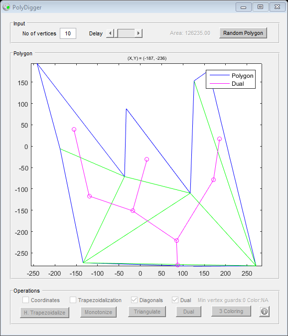

function varargout = PolyDigger(varargin)
gui_Singleton = 1;
gui_State = struct('gui_Name', mfilename, ...
'gui_Singleton', gui_Singleton, ...
'gui_OpeningFcn', @PolyDigger_OpeningFcn, ...
'gui_OutputFcn', @PolyDigger_OutputFcn, ...
'gui_LayoutFcn', [] , ...
'gui_Callback', []);
if nargin && ischar(varargin{1})
gui_State.gui_Callback = str2func(varargin{1});
end
if nargout
[varargout{1:nargout}] = gui_mainfcn(gui_State, varargin{:});
else
gui_mainfcn(gui_State, varargin{:});
end
end
function PolyDigger_OpeningFcn(hObject, ~, handles, varargin)
handles.output = hObject;
guidata(hObject, handles);
set(handles.trap_bt,'Enable','off');
set(handles.mono_bt,'Enable','off');
set(handles.tria_bt,'Enable','off');
set(handles.dual_bt,'Enable','off');
set(handles.colr_bt,'Enable','off');
set(handles.cord_ck,'Enable','off');
set(handles.trap_ck,'Enable','off');
set(handles.diag_ck,'Enable','off');
set(handles.dual_ck,'Enable','off');
global POLY_BT; global TRAP_BT; global MONO_BT; global TRIA_BT; global DUAL_BT; global COLR_BT;
global TRAP_CK; global DIAG_CK; global DUAL_CK;
POLY_BT = 0; TRAP_BT = 0; MONO_BT = 0; TRIA_BT = 0; DUAL_BT = 0; COLR_BT = 0;
TRAP_CK = 0; DIAG_CK = 0; DUAL_CK = 0;
zoom on
set (gcf, 'WindowButtonMotionFcn', @mouseMove);
warning off MATLAB:HandleGraphics:ObsoletedProperty:JavaFrame;
javaFrame = get(hObject,'JavaFrame');
javaFrame.setFigureIcon(javax.swing.ImageIcon('cg_mini.png'));
end
function mouseMove(~, ~)
C = get (gca, 'CurrentPoint');
x = C(1,1);
y = C(1,2);
xl = xlim;
yl = ylim;
if(x>xl(1) && x<xl(2) && y>yl(1) && y<yl(2))
title(gca, ['\fontsize{7} \rm(X,Y) = (', num2str(x,3), ', ',num2str(y,3), ')']);
else
title(gca, '');
end
end
function varargout = PolyDigger_OutputFcn(~, ~, handles)
varargout{1} = handles.output;
end
function vert_tx_Callback(~, ~, ~)
end
function vert_tx_CreateFcn(hObject, ~, ~)
if ispc && isequal(get(hObject,'BackgroundColor'), get(0,'defaultUicontrolBackgroundColor'))
set(hObject,'BackgroundColor','white');
end
end
function poly_bt_Callback(hObject, ~, handles)
global POLY_BT; global TRAP_BT; global MONO_BT; global TRIA_BT; global DUAL_BT; global COLR_BT;
global TRAP_CK; global DIAG_CK; global DUAL_CK;
if(TRAP_BT || MONO_BT || TRIA_BT || DUAL_BT || COLR_BT || TRAP_CK || DIAG_CK || DUAL_CK)
waitfor(msgbox('Some operation is already in progress!'));
POLY_BT = 0;
return;
end;
POLY_BT = 1;
set(hObject,'Enable','off');
global gpoints;
global gn;
global gpoly_hl;
global gtrap_sz;
global gdiag_sz;
n = str2double(get(handles.vert_tx, 'String'));
if(floor(n)~=n)
msgbox('Enter a valid number!', 'Error','error');
set(hObject,'Enable','on');
return;
elseif(n<3)
msgbox('Enter a value greater than equal to 3!', 'Error','error');
set(hObject,'Enable','on');
return;
end
points = randi([-30*n 30*n], 2, n);
[y_min, y_min_idx] = min(points(2, :));
y1 = y_min;
x1 = points(1, y_min_idx);
angle = atan2d(points(2,:)-y1,points(1,:)-x1);
[~,perm] = sort(angle);
p_sorted = points;
p_sorted(1,:) = points(1,perm);
p_sorted(2,:) = points(2,perm);
points = p_sorted;
x_r = points(1,:);
y_r = points(2,:);
x = [x_r; circshift(x_r, 1, 2)];
y = [y_r; circshift(y_r, 1, 2)];
axes(handles.axes1)
poly_hl = plot(x, y, 'b', 'DisplayName','Polygon');
axis equal
legend('Polygon');
area = 0;
for j=1:n
area = area + points(1,j)*points(2,mod(j,n)+1) - points(2,j)*points(1,mod(j,n)+1);
end
area = area / 2;
area_str = ['Area: ' num2str(area,'%.2f')];
set(handles.area_tx,'String',area_str);
set(handles.gard_tx,'String','Min vertex guards:0 Color:NA');
gpoints = points;
gn = n;
gpoly_hl = poly_hl;
gtrap_sz = -1;
gdiag_sz = -1;
set(handles.trap_bt,'Enable','on');
set(handles.mono_bt,'Enable','on');
set(handles.tria_bt,'Enable','off');
set(handles.dual_bt,'Enable','off');
set(handles.colr_bt,'Enable','off');
set(handles.cord_ck,'Enable','on');
set(handles.trap_ck,'Enable','off');
set(handles.diag_ck,'Enable','off');
set(handles.dual_ck,'Enable','off');
set(handles.cord_ck,'Value',0);
set(handles.trap_ck,'Value',0);
set(handles.diag_ck,'Value',0);
set(handles.dual_ck,'Value',0);
set(hObject,'Enable','on');
POLY_BT = 0;
end
function show_coordinates()
global gh;
global gpoints;
global gn;
points = gpoints;
n = gn;
h = zeros(1, n);
for j= 1:n
r = points(:,j);
h(j) = text(r(1),r(2),['(', num2str(r(1)), ', ', num2str(r(2)), ')'], 'Color', 'blue');
end
gh = h;
end
function hide_coordinates()
global gh;
global gn;
n = gn;
h = gh;
for j= 1:n
delete(h(j));
end
gh = zeros(1, n);
end
function cord_ck_Callback(hObject, ~, ~)
val = get(hObject, 'Value');
if val == 1
show_coordinates();
else
hide_coordinates();
end
end
function trap_bt_Callback(hObject, ~, handles)
global POLY_BT; global TRAP_BT; global MONO_BT; global TRIA_BT; global DUAL_BT; global COLR_BT;
global TRAP_CK; global DIAG_CK; global DUAL_CK;
if(POLY_BT || MONO_BT || TRIA_BT || DUAL_BT || COLR_BT || TRAP_CK || DIAG_CK || DUAL_CK)
waitfor(msgbox('Some operation is already in progress!'));
TRAP_BT = 0;
return;
end;
TRAP_BT = 1;
set(hObject,'Enable','off');
global gpoints;
global gn;
global gtrap;
global gtrap_sz;
global gcusp;
global gcusp_sz;
if(gtrap_sz ~= -1 && get(handles.trap_ck,'Value')==0)
show_trapezoids();
set(handles.trap_ck,'Value',1);
set(hObject,'Enable','on');
TRAP_BT = 0;
return;
elseif(gtrap_sz ~=-1)
set(hObject,'Enable','on');
TRAP_BT = 0;
return;
end
points = gpoints;
n = gn;
trap = zeros(2, 2, 1);
cusp = zeros(2, 1);
trap_sz = 0;
cusp_sz = 0;
x_min = min(points(1,:));
x_max = max(points(1,:));
points(1,n+1) = points(1,1);
points(2,n+1) = points(2,1);
for j= 1:n
x1 = [x_min-1, x_max+1];
y1 = [points(2,j), points(2,j)];
[xi, ~] = polyxpoly(x1,y1,points(1,:),points(2,:));
v1 = xi(xi>points(1,j));
flag = 1;
if(mod(numel(v1),2)==1)
trap_sz = trap_sz+1;
trap(:,1,trap_sz) = [points(1,j) min(v1)];
trap(:,2,trap_sz) = [y1(1) y1(1)];
else
flag = 0;
end
v2 = xi(xi<points(1,j));
if(mod(numel(v2),2)==1)
trap_sz = trap_sz+1;
trap(:,1,trap_sz) = [points(1,j) max(v2)];
trap(:,2,trap_sz) = [y1(1) y1(1)];
else
flag = 0;
end
if(flag == 1)
cusp_sz = cusp_sz+1;
cusp(:,cusp_sz)= [points(1,j) points(2,j)];
end
end
gtrap = trap;
gtrap_sz = trap_sz;
gcusp = cusp;
gcusp_sz = cusp_sz;
show_trapezoids();
set(handles.trap_ck,'Enable','on');
set(handles.trap_ck,'Value',1)
set(hObject,'Enable','on');
TRAP_BT = 0;
end
function show_trapezoids()
global gtrap;
global gpoly_hl;
global gtrap_hl;
global gcusp_hl;
global gtrap_sz;
global gcusp;
global gcusp_sz;
poly_hl = gpoly_hl;
trap = gtrap;
trap_sz = gtrap_sz;
cusp = gcusp;
cusp_sz = gcusp_sz;
trap_hl = zeros(1, trap_sz);
cusp_hl = zeros(1, cusp_sz);
hold all;
for j=1:trap_sz
trap_hl(j) = plot(trap(:,1,j), trap(:,2,j), 'y');
end
for j= 1:cusp_sz
r = cusp(:,j);
cusp_hl(j) = plot(r(1),r(2),'y*');
end
if(cusp_sz>0)
legend([poly_hl(1) trap_hl(1) cusp_hl(1)],'Polygon', 'Trapezoids', 'Cusps');
else
legend([poly_hl(1) trap_hl(1)],'Polygon', 'Trapezoids');
end
hold off
gtrap_hl = trap_hl;
gcusp_hl = cusp_hl;
end
function hide_trapezoids()
global gtrap_hl;
global gtrap_sz;
global gcusp_hl;
global gcusp_sz;
trap_sz = gtrap_sz;
trap_hl = gtrap_hl;
for j=1:trap_sz
delete(trap_hl(j));
end
cusp_sz = gcusp_sz;
cusp_hl = gcusp_hl;
for j=1:cusp_sz
delete(cusp_hl(j));
end
end
function trap_ck_Callback(hObject, ~, ~)
global POLY_BT; global TRAP_BT; global MONO_BT; global TRIA_BT; global DUAL_BT; global COLR_BT;
global TRAP_CK; global DIAG_CK; global DUAL_CK;
if(POLY_BT || TRAP_BT || MONO_BT || TRIA_BT || DUAL_BT || COLR_BT || DIAG_CK || DUAL_CK)
waitfor(msgbox('Some operation is already in progress!'));
TRAP_CK = 0;
return;
end;
TRAP_CK = 1;
set(hObject,'Enable','off');
val = get(hObject, 'Value');
if val == 1
show_trapezoids();
else
hide_trapezoids();
end
set(hObject, 'Enable', 'on');
TRAP_CK = 0;
end
function mono_bt_Callback(hObject, ~, handles)
global POLY_BT; global TRAP_BT; global MONO_BT; global TRIA_BT; global DUAL_BT; global COLR_BT;
global TRAP_CK; global DIAG_CK; global DUAL_CK;
if(POLY_BT || TRAP_BT || TRIA_BT || DUAL_BT || COLR_BT || TRAP_CK || DIAG_CK || DUAL_CK)
waitfor(msgbox('Some operation is already in progress!'));
MONO_BT = 0;
return;
end;
MONO_BT = 1;
set(hObject,'Enable','off');
global gpoints;
global gn;
global gdiag;
global gdiag_sz;
global gdiag_hl;
global gpoly_hl;
global gdiag_hl_sz;
global gmono_poly;
global gmono_poly_sz;
global TCALLD;
if(gdiag_sz ~= -1)
hide_diagonals();
end
diag = zeros(1, 4);
diag_hl = zeros(1);
diag_sz = 0;
diag_hl_sz = 0;
points = gpoints;
o_points = points;
ot_points = transpose(points);
n = gn;
delay = get(handles.dlay_sl, 'Value');
[points(2,:), perm] = sort(points(2, :), 'descend');
points(1,:) = points(1,perm);
o_points(1,n+1) = o_points(1,1);
o_points(2,n+1) = o_points(2,1);
hold on
xl = xlim;
x_min = min(points(1,:));
x_max = max(points(1,:));
mono_poly= cell(1);
mono_poly_sz= 0;
o_points_bk= o_points;
for j=1:n
x1 = [x_min-1, x_max+1];
y1 = [points(2,j), points(2,j)];
[xi, yi] = polyxpoly(x1,y1,o_points(1,:),o_points(2,:));
v1 = xi(xi>points(1,j));
v2 = xi(xi<points(1,j));
if(mod(numel(v1),2)==1 && mod(numel(v2),2)==1)
[~,idx]= ismember(transpose(points(:,j)), ot_points, 'rows');
p1=-1;
for k=idx+1:n
if(o_points(2,k)<points(2,j))
p1=k;
break;
end
end
p2=-1;
for k=idx-1:-1:1
if(o_points(2,k)<points(2,j))
p2=k;
break;
end
end
if(p1~=-1 && p2~=-1 && o_points(2,p2)>o_points(2,p1))
p1 = p2;
elseif(p1==-1 && p2~=-1)
p1 = p2;
end
o_points(:,idx);
[~,idx2]= ismember(transpose(o_points(:,p1)), ot_points, 'rows');
if(idx2 > idx)
[idx2, idx]= deal(idx, idx2);
end
mono_poly_sz= mono_poly_sz+1;
mp_ct = 0;
mp_tmp= zeros(2, 1);
for k=idx2:idx
if(o_points_bk(1,k)~= -40*n)
mp_ct= mp_ct+1;
mp_tmp(:,mp_ct)=o_points(:,k);
end
end
mono_poly{mono_poly_sz}=mp_tmp;
o_points_bk(:,idx2+1:idx-1)= deal(-40*n);
diag_hl_sz = diag_hl_sz+1;
diag_hl(diag_hl_sz) = plot([points(1,j) o_points(1,p1)], [points(2,j) o_points(2,p1)], 'g');
diag_sz = diag_sz+1;
diag(diag_sz,:)=[points(1,j) points(2,j) o_points(1,p1) o_points(2,p1)];
end
if(delay>0)
ph = plot([xl(1)-1, xl(2)+1], [points(2,j) points(2,j)], 'r');
mh = mapshow(xi,yi,'DisplayType','point','Marker','o');
pause(delay);
delete(ph);
delete(mh);
end
end
if(diag_sz>0)
legend([gpoly_hl(1) diag_hl(1)], 'Polygon', 'Diagonals');
end
hold off
mono_poly_sz= mono_poly_sz+1;
mp_ct = 0;
mp_tmp= zeros(2, 1);
for k=1:n
if(o_points_bk(1,k)~= -40*n)
mp_ct= mp_ct+1;
mp_tmp(:,mp_ct)=o_points(:,k);
end
end
mono_poly{mono_poly_sz}=mp_tmp;
gdiag = diag;
gdiag_sz = diag_sz;
gdiag_hl = diag_hl;
gdiag_hl_sz = diag_hl_sz;
gmono_poly = mono_poly;
gmono_poly_sz = mono_poly_sz;
TCALLD = 0;
set(handles.tria_bt,'Enable','on');
set(handles.diag_ck,'Enable','off');
set(handles.diag_ck,'Value',0);
set(hObject,'Enable','on');
MONO_BT = 0;
end
function dlay_sl_Callback(hObject, ~, handles)
val = get(hObject,'Value');
if(val == 0)
set(hObject,'TooltipString', 'No animations!');
set(handles.mono_bt,'TooltipString', 'No animations!');
set(handles.tria_bt,'TooltipString', 'No animations!');
elseif(val == 1)
set(hObject,'TooltipString', 'Might take long time to triangulate!');
set(handles.mono_bt,'TooltipString', 'Might take long time, consider reducing delay!');
set(handles.tria_bt,'TooltipString', 'Might take long time, consider reducing delay!!');
else
set(hObject,'TooltipString', '');
set(handles.mono_bt,'TooltipString', '');
set(handles.tria_bt,'TooltipString', '');
end
end
function dlay_sl_CreateFcn(hObject, ~, ~)
if isequal(get(hObject,'BackgroundColor'), get(0,'defaultUicontrolBackgroundColor'))
set(hObject,'BackgroundColor',[.9 .9 .9]);
end
end
function tria_bt_Callback(hObject, ~, handles)
global POLY_BT; global TRAP_BT; global MONO_BT; global TRIA_BT; global DUAL_BT; global COLR_BT;
global TRAP_CK; global DIAG_CK; global DUAL_CK;
if(POLY_BT || TRAP_BT || MONO_BT || DUAL_BT || COLR_BT || TRAP_CK || DIAG_CK || DUAL_CK)
waitfor(msgbox('Some operation is already in progress!'));
TRIA_BT = 0;
return;
end;
TRIA_BT = 1;
set(hObject,'Enable','off');
global gpoints;
global gdiag;
global gdiag_sz;
global gdiag_hl;
global gpoly_hl;
global gdiag_hl_sz;
global gmono_poly;
global gtria;
global gtria_sz;
global TCALLD;
if(TCALLD==1)
show_diagonals();
set(handles.mono_bt,'Enable','on');
set(handles.trap_bt,'Enable','on');
set(handles.trap_ck,'Enable','on');
set(hObject,'Enable','on');
TRIA_BT = 0;
return;
end
delay = get(handles.dlay_sl, 'Value');
diag = gdiag;
diag_sz = gdiag_sz;
diag_hl = gdiag_hl;
diag_hl_sz = gdiag_hl_sz;
mono_poly = gmono_poly;
tria = zeros(1,3,2);
tria_sz = 0;
hold on;
for j=1:length(mono_poly)
mpoints= mono_poly{j};
mopoints= mpoints;
motpoints=transpose(mopoints);
mn= numel(mpoints(1,:));
mopoints(1,mn+1) = mopoints(1,1);
mopoints(2,mn+1) = mopoints(2,1);
[mpoints(2,:), mperm] = sort(mpoints(2, :), 'descend');
mpoints(1,:) = mpoints(1,mperm);
x_max = max(mpoints(1,:));
donep= zeros(1,mn);
for k=2:mn
x1=mpoints(1,k);
y1=mpoints(2,k);
for l=2:k-1
x2=mpoints(1,l); y2=mpoints(2,l);
[~,p1] = ismember([x1 y1], motpoints, 'rows');
[~,p2]= ismember([x2 y2], motpoints, 'rows');
if(donep(p1)==1 || donep(p2)==1)
continue;
end
if(isequal([x2 y2],motpoints(mod(p1,mn)+1,:)) || (p1>1&&isequal([x2 y2],motpoints(p1-1,:))) ||(p1==1&&isequal([x2 y2],motpoints(mn,:))))
continue;
end
[xk, ~] = polyxpoly([x1 x2],[y1 y2],mopoints(1,:),mopoints(2,:));
if(~(numel(xk)==2 || (xk(1)==xk(numel(xk)) && numel(xk)==3)))
continue;
end
xm =(x1+x2)/2; ym =(y1+y2)/2;
[xk, ~] = polyxpoly([xm x_max+1],[ym ym],mopoints(1,:),mopoints(2,:));
if(mod(numel(xk),2)==1)
if(p1>p2)
[p1, p2]=deal(p2, p1);
end
[x3, y3]= deal(mopoints(1,p1+1), mopoints(2,p1+1));
for ptr=p1+1:p2-1
if(donep(ptr)==0)
donep(ptr)=1;
[x3, y3]= deal(mopoints(1,ptr), mopoints(2,ptr));
break;
end
end
tria_sz= tria_sz+1;
tria(tria_sz,1,:)=[x1 y1];
tria(tria_sz,2,:)=[x2 y2];
tria(tria_sz,3,:)=[x3 y3];
diag_hl_sz = diag_hl_sz+1;
diag_hl(diag_hl_sz) = plot([x1 x2], [y1 y2], 'g');
diag_sz = diag_sz+1;
diag(diag_sz,:)=[x1 y1 x2 y2];
if(delay>0)
pause(delay);
end
end
end
end
tria_sz= tria_sz+1;
ct= 0;
for k=1:mn
if(donep(k)==0)
ct= ct+1;
[xt, yt]=deal(mopoints(1,k), mopoints(2,k));
tria(tria_sz,ct,:)=[xt yt];
end
end
end
if(diag_sz>0)
legend([gpoly_hl(1) diag_hl(1)], 'Polygon', 'Diagonals');
end
hold off;
gdiag = diag;
gdiag_sz = diag_sz;
gdiag_hl = diag_hl;
gdiag_hl_sz = diag_hl_sz;
gtria = tria;
gtria_sz = tria_sz;
TCALLD = 1;
set(handles.dual_bt,'Enable','on');
set(handles.diag_ck,'Enable','on');
set(handles.diag_ck,'Value',1);
set(hObject,'Enable','on');
TRIA_BT = 0;
end
function show_diagonals()
global gdiag;
global gdiag_sz;
global gdiag_hl;
global gdiag_hl_sz;
global gpoly_hl;
diag = gdiag;
diag_sz = gdiag_sz;
diag_hl = gdiag_hl;
diag_hl_sz = gdiag_hl_sz;
hold on
for j=1:diag_sz
x1=diag(j,1); x2=diag(j,3); y1=diag(j,2); y2=diag(j,4);
diag_hl_sz = diag_hl_sz+1;
diag_hl(diag_hl_sz) = plot([x1 x2], [y1 y2], 'g');
end
if(diag_sz>0)
legend([gpoly_hl(1) diag_hl(1)], 'Polygon', 'Diagonals');
end
hold off
gdiag_hl = diag_hl;
gdiag_hl_sz = diag_hl_sz;
end
function hide_diagonals()
global gdiag_hl;
global gdiag_hl_sz;
diag_hl = gdiag_hl;
diag_hl_sz = gdiag_hl_sz;
for j=1:diag_hl_sz
delete(diag_hl(j));
end
gdiag_hl_sz = 0;
end
function diag_ck_Callback(hObject, ~, ~)
global POLY_BT; global TRAP_BT; global MONO_BT; global TRIA_BT; global DUAL_BT; global COLR_BT;
global TRAP_CK; global DIAG_CK; global DUAL_CK;
if(POLY_BT || TRAP_BT || MONO_BT || TRIA_BT || DUAL_BT || COLR_BT || TRAP_CK || DUAL_CK)
waitfor(msgbox('Some operation is already in progress!'));
DIAG_CK = 0;
return;
end;
DIAG_CK = 1;
set(hObject,'Enable','off');
val = get(hObject, 'Value');
if val == 1
show_diagonals();
else
hide_diagonals();
end
set(hObject,'Enable','on');
DIAG_CK = 0;
end
function dual_bt_Callback(hObject, ~, handles)
global POLY_BT; global TRAP_BT; global MONO_BT; global TRIA_BT; global DUAL_BT; global COLR_BT;
global TRAP_CK; global DIAG_CK; global DUAL_CK;
if(POLY_BT || TRAP_BT || MONO_BT || TRIA_BT || COLR_BT || TRAP_CK || DIAG_CK || DUAL_CK)
waitfor(msgbox('Some operation is already in progress!'));
DUAL_BT = 0;
return;
end;
DUAL_BT = 1;
set(hObject,'Enable','off');
global gtria;
global gtria_sz;
global gdual_hl;
global gdual_hl_sz;
global gdualm_hl;
global gdualm_hl_sz;
global gdual;
global gdual_sz;
global gpoly_hl;
tria= gtria;
tria_sz= gtria_sz;
dual_hl=zeros(1);
dual_hl_sz=0;
dualm_hl=zeros(1);
dualm_hl_sz=0;
dual=zeros(1,2);
dual_sz=0;
delay = get(handles.dlay_sl, 'Value');
xm= zeros(1, tria_sz);
ym= zeros(1, tria_sz);
hold on;
for i=1:tria_sz
[xm(i), ym(i)]=deal(mean(tria(i,:,1)), mean(tria(i,:,2)));
dualm_hl_sz= dualm_hl_sz+1;
dualm_hl(dualm_hl_sz)= mapshow(xm(i),ym(i),'DisplayType','point','Marker','o','MarkerEdgeColor','m');
end
[ym, perm] = sort(ym);
xm = xm(perm);
for i=1:tria_sz
[x1, y1]=deal(xm(i), ym(i));
for j=i+1:tria_sz
if(j<1)
break;
end
[x2, y2]=deal(xm(j), ym(j));
tct=0;
for k=1:3
xt1=tria(perm(i),k,1);
yt1=tria(perm(i),k,2);
flag=0;
for l=1:3
xt2=tria(perm(j),l,1);
yt2=tria(perm(j),l,2);
if(isequal([xt1 yt1],[xt2 yt2]))
flag=1; break;
end
end
if(flag==1)
tct=tct+1;
end
end
if(tct==2)
dual_hl_sz= dual_hl_sz+1;
dual_hl(dual_hl_sz)= plot([x1 x2], [y1 y2], 'm');
dual_sz= dual_sz+1;
dual(dual_sz,1)= perm(i);
dual(dual_sz,2)= perm(j);
if(delay>0)
pause(delay);
end
end
end
end
if(dual_sz>0)
legend([gpoly_hl(1) dual_hl(1)], 'Polygon', 'Dual');
end
hold off;
gdual_hl=dual_hl;
gdual_hl_sz=dual_hl_sz;
gdualm_hl=dualm_hl;
gdualm_hl_sz=dualm_hl_sz;
gdual=dual;
gdual_sz=dual_sz;
set(hObject,'Enable','on');
set(handles.dual_ck,'Enable','on');
set(handles.dual_ck,'Value',1);
set(handles.colr_bt,'Enable','on');
DUAL_BT = 0;
end
function info_bt_Callback(~, ~, ~)
waitfor(msgbox({'This application is a part of the Coding Project submitted for the partial fulfillment of the course CSN-475 (Computational Geometry) under the guidance of Dr Sudip Roy.';
'';
'Developed By:';
'(15535002) Abhishek Sharma';
'(15535029) Prakhar Dhama';
'Moodle Group# 19'}, 'Info', 'help'));
end
function show_dual()
end
function hide_dual()
global gdual_hl;
global gdual_hl_sz;
global gdualm_hl;
global gdualm_hl_sz;
dual_hl = gdual_hl;
dual_hl_sz = gdual_hl_sz;
dualm_hl = gdualm_hl;
dualm_hl_sz = gdualm_hl_sz;
for j=1:dual_hl_sz
delete(dual_hl(j));
end
for j=1:dualm_hl_sz
delete(dualm_hl(j));
end
gdual_hl_sz = 0;
gdualm_hl_sz = 0;
end
function dual_ck_Callback(hObject, ~, ~)
global POLY_BT; global TRAP_BT; global MONO_BT; global TRIA_BT; global DUAL_BT; global COLR_BT;
global TRAP_CK; global DIAG_CK; global DUAL_CK;
if(POLY_BT || TRAP_BT || MONO_BT || TRIA_BT || DUAL_BT || COLR_BT || TRAP_CK || DIAG_CK)
waitfor(msgbox('Some operation is already in progress!'));
DUAL_CK = 0;
return;
end;
DUAL_CK = 1;
set(hObject,'Enable','off');
val = get(hObject, 'Value');
if val == 1
show_dual();
else
hide_dual();
end
DUAL_CK = 0;
end
function colr_bt_Callback(hObject, ~, handles)
global POLY_BT; global TRAP_BT; global MONO_BT; global TRIA_BT; global DUAL_BT; global COLR_BT;
global TRAP_CK; global DIAG_CK; global DUAL_CK;
if(POLY_BT || TRAP_BT || MONO_BT || TRIA_BT || DUAL_BT || TRAP_CK || DIAG_CK || DUAL_CK)
waitfor(msgbox('Some operation is already in progress!'));
COLR_BT = 0;
return;
end;
COLR_BT = 1;
set(hObject,'Enable','on');
global gpoints;
global gn;
global gtria;
global gdual;
global gdual_sz;
tria=gtria;
dual=gdual;
dual_sz=gdual_sz;
points= gpoints;
tpoints= transpose(points);
n=gn;
colrd= zeros(1, n);
delay = get(handles.dlay_sl, 'Value');
hold on;
ptr=dual(1,1);
rct=0;gct=0;bct=0;
for j=1: 3
[x, y]= deal(tria(ptr,j,1), tria(ptr,j,2));
[~,idx]= ismember([x y], tpoints, 'rows');
colrd(idx)=2^(j-1);
if(j==1)
r_hl=plot(x,y,'.','MarkerEdgeColor','r','MarkerSize',20);
rct=rct+1;
elseif(j==2)
g_hl=plot(x,y,'.','MarkerEdgeColor','g','MarkerSize',20);
gct=gct+1;
else
b_hl=plot(x,y,'.','MarkerEdgeColor','b','MarkerSize',20);
bct=bct+1;
end
end
for i=1: dual_sz
ptr= dual(i,2);
c=0;
tc=0;
for j=1: 3
[x, y]= deal(tria(ptr,j,1), tria(ptr,j,2));
[~,idx]= ismember([x y], tpoints, 'rows');
if(idx<1||idx>n)
continue;
end
if(colrd(idx)==0)
tc=idx;
end
c= c+colrd(idx);
end
if(tc==0)
continue;
end
if(c==3)
colrd(tc)=4;
plot(points(1,tc),points(2,tc),'.','MarkerEdgeColor','b','MarkerSize',20);
bct=bct+1;
elseif(c==5)
colrd(tc)=2;
plot(points(1,tc),points(2,tc),'.','MarkerEdgeColor','g','MarkerSize',20);
gct=gct+1;
elseif(c==6)
colrd(tc)=1;
plot(points(1,tc),points(2,tc),'.','MarkerEdgeColor','r','MarkerSize',20);
rct=rct+1;
end
if(delay>0)
pause(delay);
end
end
legend([r_hl(1) g_hl(1) b_hl(1)], 'Red', 'Green', 'Blue');
hold off;
gard_str = ['Min vertex guards: ' num2str(min([rct gct bct]))];
if(rct<=gct && rct<=bct)
gard_str = [gard_str ' Color: R'];
elseif(gct<bct && gct<=rct)
gard_str = [gard_str ' Color: G'];
else
gard_str = [gard_str ' Color: B'];
end
set(handles.gard_tx,'String',gard_str);
set(hObject,'Enable','on');
COLR_BT = 0;
end
